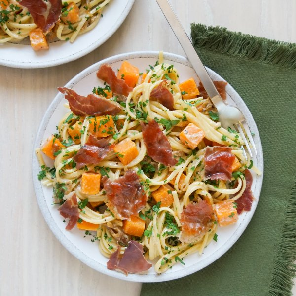

Creamy Linguine with Crispy Prosciutto, Squash, Fennel & Parmesan

Total Time
35 min
Nutrition (per serving)
633.7 kcalCalories
25 gProtein
77.8 gCarbs
26.6 gFat
Full nutrition table
| Calories | 633.7 kcal |
| Total fat | 26.6 g |
| Saturated fat | 12 g |
| Trans fat | 0.5 g |
| Cholesterol | 70.3 mg |
| Sodium | 611.1 mg |
| Carbohydrates | 77.8 g |
| Fiber | 10.4 g |
| Sugars | 11 g |
| Protein | 25 g |
| Potassium | 1106.9 mg |
| Calcium | 164.9 mg |
| Iron | 5.4 mg |
| Vitamin A | 563.2 IU |
| Vitamin C | 52.4 mg |
| Vitamin D | 10.7 IU |
Cookware
Ingredients
- 1 smallbutternut squash
- 2fennel bulbs
- 4 fl ozheavy whipping cream
- 1 small bunchItalian (flat-leaf) parsley
- 10 ozlinguine pasta
- 2 ozParmesan cheese
- 8 slicesprosciutto
- black pepper
- crushed red pepper
- extra virgin olive oil
- onion powder
- salt
Steps
- Wash and dry the fresh produce.1 small butternut squash
2 fennel bulbs
1 small bunch Italian (flat-leaf) parsley - Trim and peel squash; halve lengthwise, scrape out the seeds, and medium dice.
- Fill a large pot halfway with hot water (from the tap), cover, and bring to a boil. Uncover, add salt, squash, and pasta, then stir for a few seconds. Cook until squash is tender and pasta is desired firmness, 8-10 minutes. (Reserve a ½-cup cooking water before draining and set aside.)½ tsp salt
10 oz linguine pasta - Meanwhile, preheat a large skillet over medium heat.
- Once the skillet is hot, working in batches if necessary, add prosciutto and cook until crispy, about 1 minute per side. Remove to a plate and set aside. (Reserve skillet for later use.)8 slices prosciutto
- Trim off root end and stalks of the fennel, leaving only the white bulbs. Halve fennel bulbs lengthwise, then slice crosswise into thin half-moons.
- Return skillet to medium heat. Once the skillet is hot, add oil and swirl to coat the bottom. Add fennel and spices; cook, stirring occasionally, until soft and starting to brown, 5-6 minutes.2 tbsp extra virgin olive oil
1 tsp onion powder
½ tsp salt
¼ tsp black pepper
¼ tsp crushed red pepper - While the fennel is cooking, shave parsley leaves off the stems; discard stems and mince the leaves. Place in a small bowl.
- Finely grate Parmesan. Add to the bowl with the parsley.2 oz Parmesan cheese
- When the fennel is done, add cooked squash, pasta, reserved pasta water, parsley, Parmesan, and cream to the skillet. Continue to cook, stirring occasionally, until water has evaporated and Parmesan has melted, about 2 minutes. Remove from heat.4 fl oz (½ cup) heavy whipping cream
- Meanwhile, crumble or chop prosciutto into bite-sized pieces.
- To serve, divide pasta between plates or bowls and top with crispy prosciutto. Enjoy!